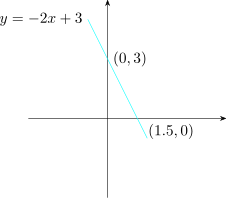
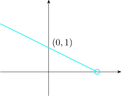
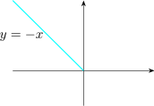
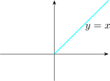
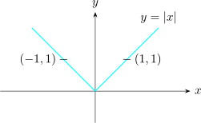
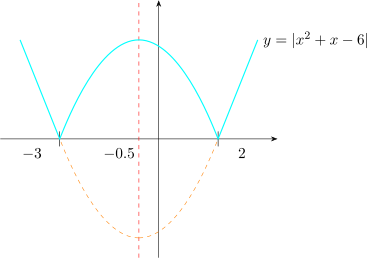
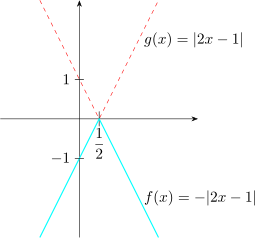
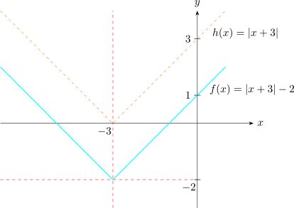
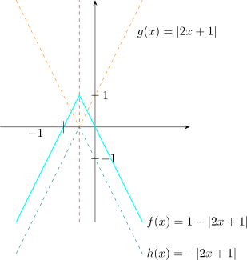

11 Graphs of Absolute Value Functions
To sketch the graph of a straight line \(y=mx+c\). We need only to find two points on the line and draw a straight
line passing through those two points.
Solution.
Recall the domain of the linear function is \(\mathbb {R}\) the set of real numbers. Therefore to get two points
on the line we use any two real numbers for \(x\),
When \(x=0\implies y=3\). \((0,3)\) is one point on the line.
When \(y=0\implies x=\dfrac {3}{2}\). \(\bigg (\dfrac {3}{2},0\bigg )\) is another point.

Sketch the graph of \(y= \begin {cases} -\dfrac {1}{2}x+1, &x<2\\\\ \dfrac {1}{2}x-1, & x\geq 2\\ \end {cases} \)
\((-\infty ,2)\hspace {0.5cm} y=-\dfrac {1}{2}x+1\)
\([2,\infty )\hspace {0.5cm} y=\dfrac {1}{2}x-1\)
Solution.
This function divides the domain into parts for \(-\infty < x<2,\) \(y=-\dfrac {1}{2}x+1\) which is a straight line.
Also for \(2\leq x< \infty ,\) \(y=\dfrac {1}{2}x-1\) which is also a straight line.
Therefore we need to sketch two straight lines for this graph.
\(-\infty <x<2,\) \(y=-\dfrac {1}{2}x+1\)
when \(x=0,\) \(y=1\)
when \(y=0,\) \(x=2\)

For \(2\leq x < \infty ,\) \(y=\dfrac {1}{2}x-1\)
when \(x=2,\) \(y=0\)
when \(x=4,\) \(y=1\)
Thus

This is the graph of \( y= \begin {cases} -\dfrac {1}{2}x+1, & x<2\\\\ \dfrac {1}{2}x-1, & x\geq 2\\ \end {cases} \)
And this is exactly the graph of \(y=\bigg |\dfrac {1}{2}x-1\bigg |\), because that absolute value unpacks into the very piecewise function just sketched:
\begin {align*} y=\bigg |\dfrac {1}{2}x-1\bigg | & = \begin {cases} \dfrac {1}{2}x-1 & \text {if}\hspace {0.3cm} \dfrac {1}{2}x-1\geq 0\\\\ -\bigg (\dfrac {1}{2}x-1\bigg ) & \text {if}\hspace {0.3cm} \dfrac {1}{2}x-1<0\\ \end {cases}\\\\ &= \begin {cases} \dfrac {1}{2}x-1 & \text {if}\hspace {0.3cm} x\geq 2\\\\ -\dfrac {1}{2}x+1 & \text {if}\hspace {0.3cm} x<2\\ \end {cases}\\ \end {align*}
Recall that \(|x|= \begin {cases} x & \text {if}\hspace {0.3cm} x\geq 0\\ -x & \text {if}\hspace {0.3cm} x<0\\ \end {cases} \)
Thus to sketch the graph of \(y=|x|\), we use the definition to write the function as \[y= \begin {cases} x & \text {if}\hspace {0.3cm} x\geq 0\\ -x & \text {if}\hspace {0.3cm} x<0\\ \end {cases} \]
This gives two straight lines whose graphs we can easily sketch as follows
| For \(x<0,\) \(y=-x\) | For \(x\geq 0,\) \(y=x\) | ||||
|  |  |
combining the two graphs we obtain the following graph

Solution.
Using the definition \begin {align*} f(x)=|3x-3| & = \begin {cases} 3x-3 & \text {if}\hspace {0.4cm} 3x-3\geq 0\\ -(3x-3) & \text {if}\hspace {0.4cm} 3x-3<0\\ \end {cases}\\\\ \implies \hspace {0.5cm} f(x) & = \begin {cases} 3x-3 & \text {if}\hspace {0.3cm} x\geq 1\\ -3x+3 & \text {if}\hspace {0.3cm} x<1 \end {cases} \end {align*}

Redefine the function \(f(x)=\left |x^{2}+x-6\right |\) so that it does not contain an absolute value.
Solution.
\(f(x)= \begin {cases} x^2+x-6 & \text {if}\hspace {0.3cm} x^2+x-6\geq 0\\\\ -(x^2+x-6) & \text {if}\hspace {0.3cm} x^2+x-6<0\\ \end {cases} \)
\(x^2+x-6\geq 0\implies (x+3)(x-2)\geq 0\) so the critical values are \(x=-3\) and \(x=2\)
| \((-4)\) | \(-3\) | 0 | 2 | \((3)\) | |
| \(x+3\) | \(-\) | \(|\) | \(+\) | \(|\) | \(+\) |
| \(x-2\) | \(-\) | \(|\) | \(-\) | \(|\) | \(+\) |
| \((x+3)(x-2)\) | \(+\) | \(|\) | \(-\) | \(|\) | \(+\) |
- \(x^2+x-6\geq 0\) in the interval \((-\infty ,-3]\cup [2,\infty )\)
- \(x^2+x-6<0\) in the interval \((-3,2)\)
\(f(x)= \begin {cases} x^2+x-6 & \text {for}\hspace {0.4cm} (-\infty ,-3]\cup [2,\infty )\\\\ -x^2-x+6 & \text {for}\hspace {0.4cm} (-3,2)\\ \end {cases} \)

Note 11.5. A quicker way to sketch \(y=\left |f(x)\right |\). Rather than unpacking the definition every time, sketch \(y=f(x)\) first and then reflect in the \(x\)-axis whatever lies below it, leaving the rest alone.
The reason is immediate from the definition: where \(f(x)\geq 0\) the absolute value changes nothing, and where \(f(x)<0\) it returns \(-f(x)\), which is the mirror image in the \(x\)-axis. The graph of \(\left |f\right |\) therefore never dips below the axis, and it touches the axis exactly at the roots of \(f\).
This is why \(y=\left |x\right |\) and \(y=\left |3x-3\right |\) are V-shaped: a straight line crosses the axis once, and folding the lower half upwards creates the corner at that crossing. It is also why \(\left |x^{2}+x-6\right |\) in the example above has two corners — one at each root — with the arch between them turned upside down.
The corner is worth a remark of its own. At such a point the graph has no single tangent direction, and the function fails to be differentiable there, though it remains perfectly continuous. That is the standard example of the distinction, and it will return in the chapter on derivatives.
Solution.
The graph of \(f(x)=-|2x-1|\) is the graph of \(g(x)=|2x-1|\) but reflected in the \(x-\)axis.

Sketch the graph of each of the following functions
-
- (a)
- \(f(x)=|x+3|-2\)
- (b)
- \(f(x)=1-|2x+1|\)
- (c)
- \(f(x)=|2x+3|-|3x-3|\)
Solution.
-
- (a)
- \(f(x)=|x+3|-2\).
First consider the graph of \(h(x)=|x+3|\).
- (b)
- \(f(x)=1-|2x+1|\)
First consider the graph of \(g(x)=|2x+1|\). Then sketch the graph of
\(h(x)=-|2x+1|\) which is a reflection of the graph of \(g(x)=|2x+1|\) in the \(x-\)axis.

- (c)
- \(f(x)=|2x+3|-|3x-3|\)
Here we use the definition to find the various straight lines to sketch. The critical values are where each bracket changes sign: \(2x+3=0\) at \(x=-\dfrac {3}{2}\), and \(3x-3=0\) at \(x=1\).
So we redefine the function in the intervals \[\bigg (-\infty ,-\dfrac {3}{2}\bigg ),\hspace {0.5cm} \bigg [-\dfrac {3}{2},1\bigg ),\hspace {0.5cm} [1,\infty )\]\((-2)\) \(-\frac {3}{2}\) 0 1 \((2)\) \(2x+3\)\(-\) \(|\) \(+\) \(|\) \(+\) \(3x-3\)\(-\) \(|\) \(-\) \(|\) \(+\) Below \(-\frac {3}{2}\) both brackets are negative; between \(-\frac {3}{2}\) and \(1\) the first is positive and the second still negative; above \(1\) both are positive. Therefore \[f(x)= \begin {cases} -(2x+3)+(3x-3) & \text {for}\hspace {0.3cm} x<-\dfrac {3}{2}\\[4pt] (2x+3)+(3x-3) &\text {for}\hspace {0.3cm} -\dfrac {3}{2}\leq x<1\\[4pt] (2x+3)-(3x-3) &\text {for}\hspace {0.3cm}x\geq 1 \end {cases}\]
Now
- i.
- \(-(2x+3)+(3x-3)=-2x-3+3x-3=x-6\)
- ii.
- \((2x+3)-(-)(3x-3)=2x+3+3x-3=5x\)
- iii.
- \((2x+3)-(3x-3)=2x+3-3x+3=-x+6\)
The function becomes \(f(x)= \begin {cases} x-6 & \text {if}\hspace {0.3cm} x<-\dfrac {3}{2}\\\\ 5x & \text {if} \hspace {0.3cm} -\dfrac {3}{2}\leq x<1\\\\ -x+6 & \text {if}\hspace {0.3cm} x\geq 1\\ \end {cases} \)

Questions on this section
Stuck on something here? Ask below and it stays attached to this topic.